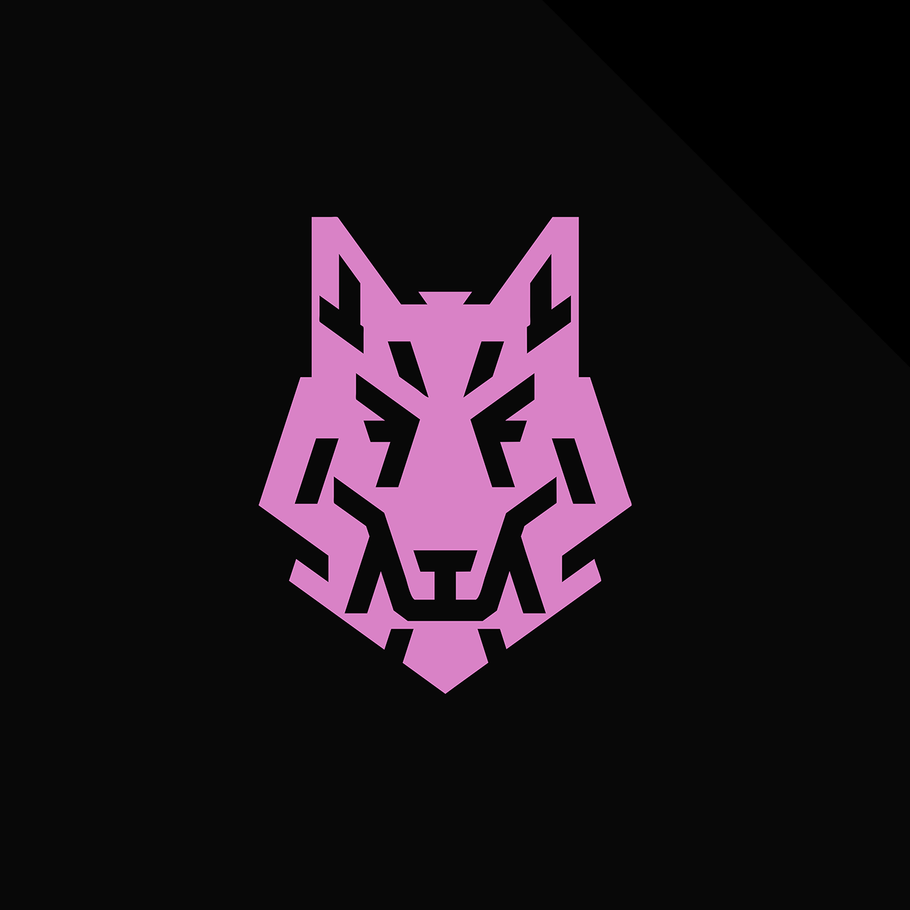
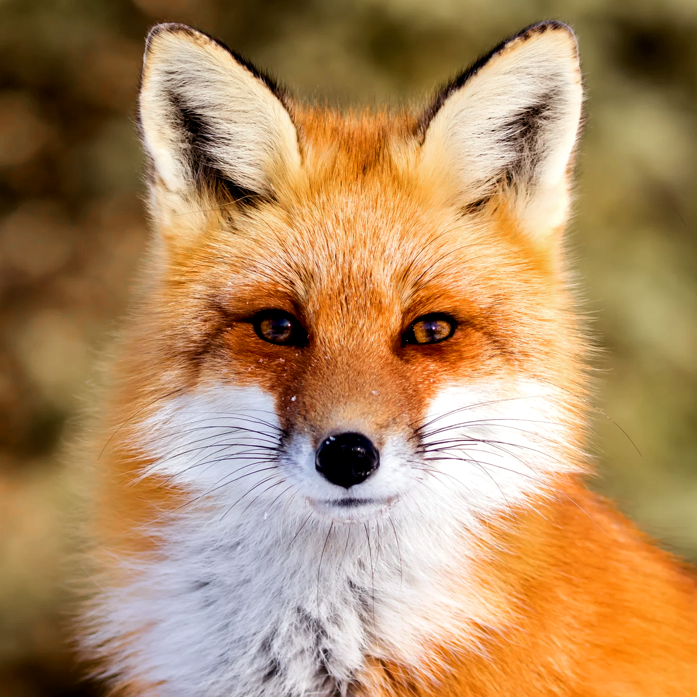
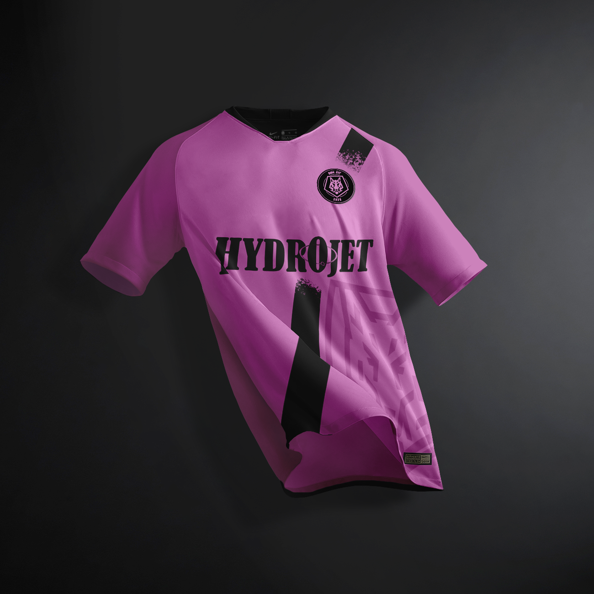
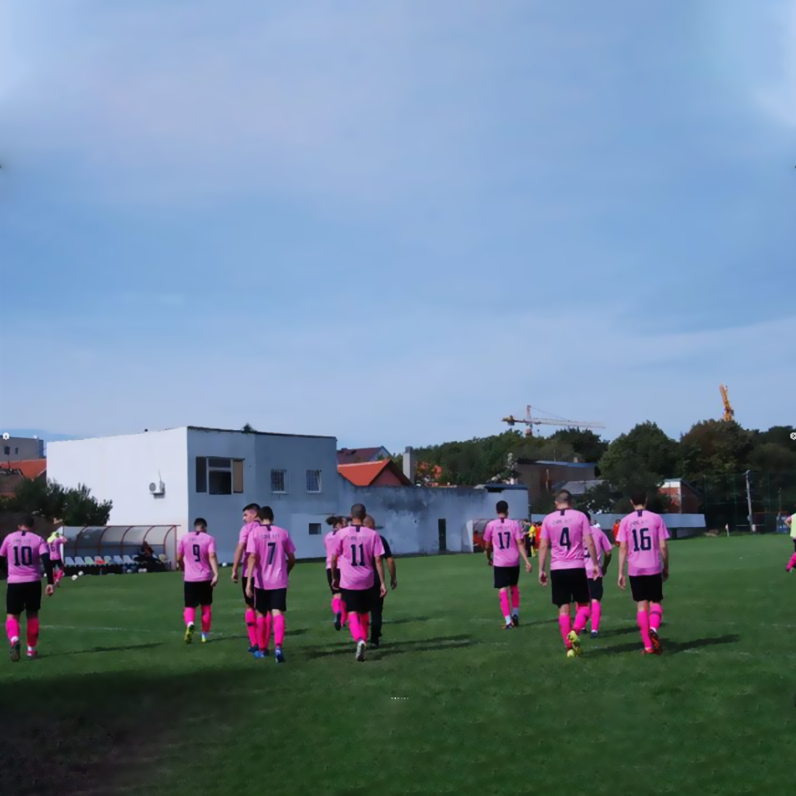

Omladinski fudbalski klub Lug (lit. Youth Football Club Lug) is a small town, lower league team in Veliki Mokri Lug, Serbia. The team founded in 2020 is proud to bring youthful and fresh energy to the little leagues.


Icon
The mascot of the club is a fox, and that is what the icon is based of. An abstraction of the said critter, it was a challenge to make it recognizable even in small resolutions, while not losing on desired simplicity.


Jersey
White, Red, Blue. These are, in order, the most common colors that average lower league teams are brandishing. This young club, with an already passionate fanbase tries to bring something different to the table and does it achieve that goal with a playful, vivid and eyecatching pink.